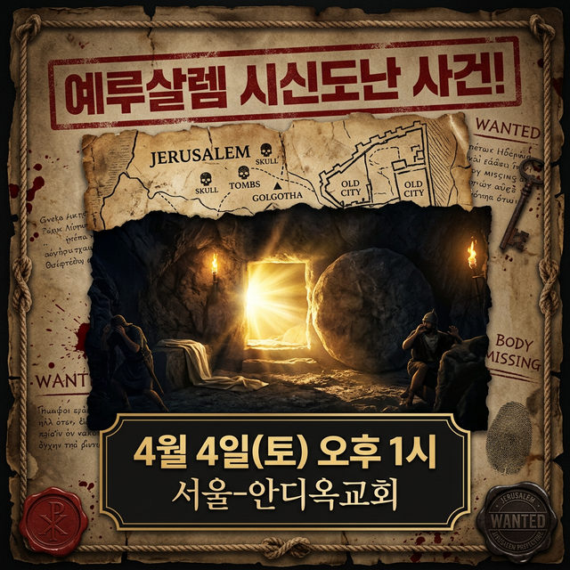

수사 의뢰서
3일 전,
예루살렘에서사건이 일어났다.
목격자들은 말이 없고,진실은 어둠 속에 묻혀있다.
당신만이 밝혀낼 수 있다.
목격자를 선택해 심문하세요 0/3명 선택됨
—

4월 4일(토) 오후 1시
서울-안디옥교회에서 이 미스터리를 풀어보세요!
"진짜 수사는 현장에서 시작됩니다."
4월 4일(토)
서울-안디옥교회에서
이 사건의 수사가 시작됩니다!
4월 4일
예루살렘 미스터리
현장에서 만나요
📅 2025년 4월 4일 (토)
수사에 합류하시겠습니까?